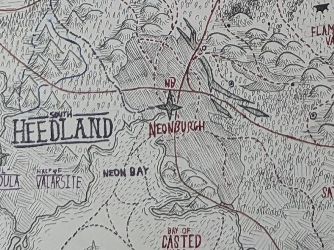
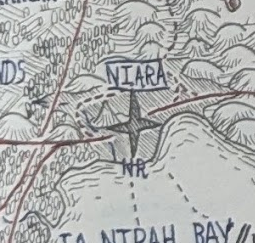
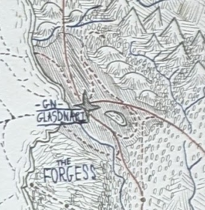
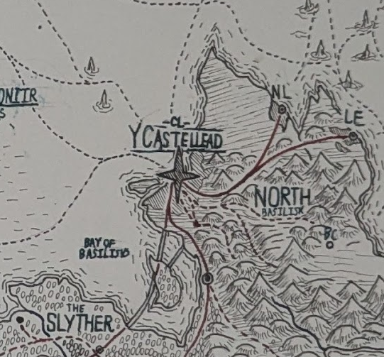

{kind=link}
Overview
The Allied Isle started off a parallel version of the uk. The country's government remains similar to that of the uk with one main centralised parliament in Kindah (the equivalent to London) with the smaller nations of Wanirland, Heedland and Lanbasilisk having their own governments with limited power. Using the comparison with the uk, the as yet unnamed parallel to Europe is to the South and West in an L shape. There is even a high speed line between Kindah and Falias.
The technology of this setting is parallel to modern day using magical alternatives rather than our electronic systems. The main method of getting around is trains, though a parallel to cars do exist, but are less reliable as monsters do exist in the wild. These monsters are similar to animals, if animals were both aggressive towards humans and a significant threat. There are also dragons. Their typical locations are marked on the map.
The country mostly consists of mountains, moorland, forests and rougher plains. There are also some swamps and in multiple areas (in spots away from monsters) areas of dense farmland.
Quick summary of the Magic System
Magic in this world requires a substance called Manaxite (temporary name), with this being one of the major reasons for city locations, along with access to the sea as that was historically the safest method of transport due to the monsters. This is the magic system I made that is an accidental allegory to gender. The magic system isn't particularly relevant to national geographic worldbuilding. It is very relevant to the local stuff... which this map isn't about.
Kinirland
Kinirland is the most populous, most affluent and most influential part of the Allied Isle. Basically the England equivalent. This nation is in the centre of the island, surrounded on both sides by the small nations is controls. In our world, the borders might imply that the other nations were the aggressors historically. This was not originally meant to be the case, however I might explain this by local geography or straight up historical manipulation from previous kings of Kinirland before they were removed (this country did get rid of its monarchy lol).
Notable cities (in order of population)
KindahThe capital city of Kinirland and thus the Allied Isle I have not actually decided that much about this place yet. :3 |
|
|  |
NeonburghThe big city with a magic system of it's own I wont go into detail with this one, not for lack of worldbuilding, but rather to save myself repeating myself in a few weeks, View wip map. For now, I will only say that it originally was meant to combine Manchester and Birmingham. I inserted a little bit of new york. And lets just say that is has become the 3rd character in a piece I'm working on that was originally a piece about two characters. It also possesses it's own parallel magic system that removes the gender allegory and uses water instead. Yes, you can say that there is something in the water that is making everyone here non-binary... or unsided in the magic system's language. |
BranisA port city and semi-major rail hub This city parallels real life Bristol. It mostly exists to have the line between Kindah and Castellead mirror the South Wales Mainline. If you look at the line topologically (I hope I got that word right) it is nearly identical. Especially with that branch going to two city stations after a town that parallels Swindon [insert evil laughter]. However, one major difference is that I plan for it to only have one major station rather than two. |
{kind=link}
{kind=link}
{kind=link}
{kind=link}
Wanirland / A Niaralan
Wanirland, with the exception of the last minute inclusion of Heedland, has the least about it so far. It is comparable to Scotland. The high speed railway line towards the currently unnamed Europe parallel goes through Wanirland, without any stops in the country (this, of course, is unpopular there, especially in Niara).
Returland is interesting to me. In the history of this world, this region was captured by the Kinirish but later returned. This was because of dragons and swampland.
|  |
NiaraThe capital city of Wanirland Not much has been determined about this beyond it paralleling Edinburgh. If you look carefully, you can see a mountain in the city paralleling Hollyrood park in Edinburgh. If you are in the area, highly recommend. |
|  |
GlasdnariThe largest city in Wanirland Like Glasgow, this city is an industrial powerhouse larger than the actual capital city. |
{kind=link}
{kind=link}
Lanbasilisk / Llansarff
The most developed and the most fleshed out of the nations of the Allied Isle. Loosely inspired by Wales, with Castellead, it's capital, being very loosely inspired by Cardiff. This is the loosest connection as this was the original setting with no plans to expand world building outwards beyond "eh it's kinda like the uk".
The area around Castellead is famous for its deposits of pure manaxite and much like the vallies of south wales this area got mined to oblivion and back. However, as processes to refine manaxite became increasingly common, industry left the region. Llanbasilisk (combined name integrating both local languages) has a very tense relationship with the Kindah.
I have talked about this project before, so I wont go into too many details, this project was started on what felt like (at the time) a far fetched premise of "what if things went to shit for switcher*-magic uses". Sadly, it paralleled somewhat how it happened here in the uk. These changes are extremely unpopular within Llanbasilisk.
|  |
CastelleadThe capital city of Llanbasilisk Oh, whats this? a finished map?. This is the city with the most worldbuilding so far - too much to list here... I may do this entire song and dance for Castellead as this was honestly a lot of fun. |
{kind=link}
{kind=link}
This has honestly been a lot of fun making... even if it took a while lol.
I do foresee myself committing to this bit again in the future.